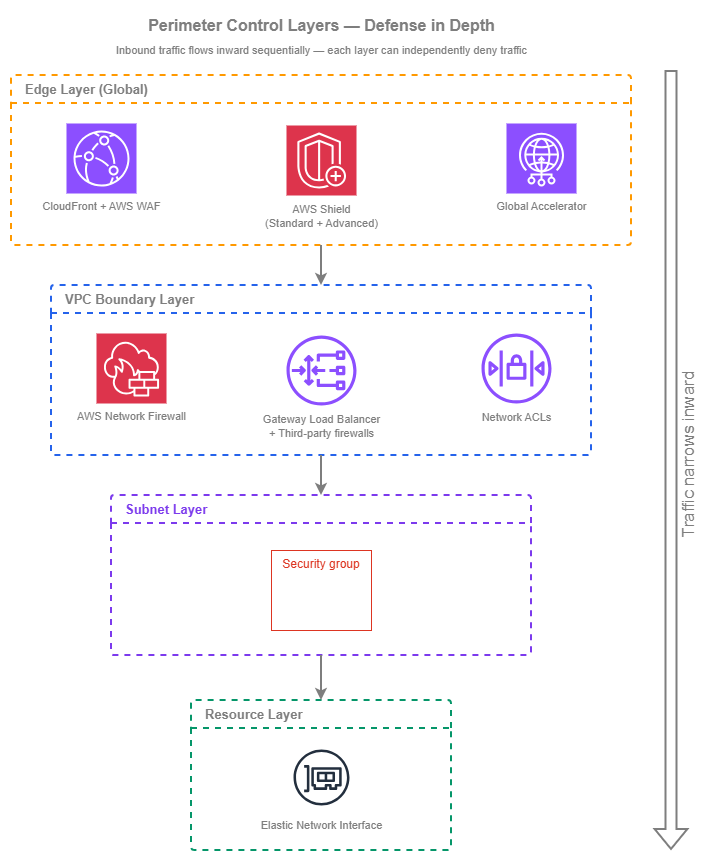

경계 제어¶
사전 요구 사항
이 섹션은 Amazon VPC, 서브넷, 인터넷 연결에 대한 이해를 전제로 합니다. AWS 네트워킹 기초가 처음이라면 해당 항목을 먼저 검토하세요.
경계 제어(Perimeter Controls)는 무단 인바운드 접근으로부터 네트워크 경계를 보호합니다. AWS에서 경계는 단일 방화벽이 아니라, 글로벌 엣지 네트워크부터 개별 탄력적 네트워크 인터페이스(Elastic Network Interface)까지 스택의 각기 다른 계층에서 동작하는 일련의 계층형 제어로 구성됩니다. 각 계층은 고유한 역할을 수행하며, 모든 계층의 조합이 심층 방어(Defense in Depth)를 실현합니다. 단일 계층에만 의존하는 것은 설계 결함입니다. 목표는 한 계층의 잘못된 구성을 다른 계층이 포착할 수 있도록 제어를 중첩하는 것입니다.
핵심 아키텍처 결정은 어떤 경계 제어를 사용할지가 아닙니다. 여러 제어를 동시에 사용하게 됩니다. 중요한 것은 계정과 VPC 전반에 걸쳐 이를 어떻게 구성할지입니다. 멀티 계정 환경에서는 AWS Firewall Manager를 통한 중앙 집중식 정책 관리로 일관된 기준선을 보장하는 한편, 적용 지점 자체는 워크로드 VPC 전반에 분산됩니다. 이처럼 정책 정의와 정책 적용을 분리하는 것이 운영 병목 없이 경계 보안을 확장 가능하게 만드는 핵심입니다.
이 페이지는 인바운드 트래픽을 보호하는 제어를 다룹니다. 아웃바운드 필터링 및 이그레스 제어는 아웃바운드 제어를 참조하세요. 워크로드 간 내부 분리는 네트워크 세분화를 참조하세요.

경계 제어 계층 — Drawio 소스
트래픽은 이 계층들을 순차적으로 통과하며 내부로 흐릅니다. 인터넷에서 들어오는 요청은 먼저 엣지(CloudFront, Shield, Global Accelerator)에 도달한 후, VPC로 진입하여 Network Firewall 또는 GWLB 기반 검사를 거치고, 서브넷 경계의 네트워크 ACL(Network ACL)을 통과한 뒤, 최종적으로 대상 리소스의 ENI에 연결된 보안 그룹(Security Group)에 도달합니다. 각 계층은 독립적으로 트래픽을 차단할 수 있으며, 어느 계층에서든 차단된 패킷은 그 아래 계층에 도달하지 못합니다.
주요 기능¶
-
보안 그룹 — 스테이트풀(Stateful), 인스턴스 수준
VPC 내 모든 ENI에 적용되는 기본 액세스 제어 메커니즘입니다. 스테이트풀 방식으로 평가되므로 반환 트래픽은 자동으로 허용됩니다. 규칙은 CIDR 블록, 접두사 목록(Prefix List), 또는 다른 보안 그룹을 참조할 수 있어 IP 관리 없이 ID 기반 접근 패턴을 구현할 수 있습니다.
-
네트워크 ACL — 스테이트리스(Stateless), 서브넷 수준
서브넷 경계에서 동작하는 심층 방어(Defense in Depth) 계층입니다. 스테이트리스 방식으로 평가되므로 인바운드와 아웃바운드 트래픽 모두 명시적으로 허용해야 합니다. NACL은 광범위한 거부 규칙을 위한 안전망으로 활용하며, 기본 액세스 제어 수단으로는 사용하지 않는 것이 좋습니다.
-
AWS WAF — L7 애플리케이션 보호
CloudFront, ALB, API Gateway, AppSync에서 HTTP/HTTPS 요청을 검사합니다. 관리형 규칙 그룹은 OWASP Top 10, 봇 제어, IP 평판 정보를 포함합니다. 커스텀 규칙을 통해 애플리케이션별 로직과 속도 제한을 처리할 수 있습니다.
-
AWS Shield — DDoS 보호
Shield Standard는 모든 공개 AWS 엔드포인트에 자동으로 무료 적용됩니다. Shield Advanced는 실시간 가시성, DDoS 대응팀(DRT) 접근, 비용 보호, 그리고 고가용성 워크로드를 위한 사전 대응 지원을 추가로 제공합니다.
-
AWS Network Firewall — 관리형 VPC 검사
VPC 수준에서 스테이트풀 및 스테이트리스 패킷 검사를 수행합니다. Suricata 호환 IPS 규칙, 도메인 필터링, 프로토콜 탐지를 지원합니다. 전용 서브넷에 방화벽 엔드포인트로 배포되며 VPC 라우팅 테이블과 통합됩니다.
-
Gateway Load Balancer — 서드파티 어플라이언스 삽입
GENEVE 캡슐화를 사용하여 Palo Alto, Fortinet, Check Point 등 서드파티 방화벽 어플라이언스를 트래픽 경로에 투명하게 삽입합니다. 조직에서 특정 벤더 기능이 필요하거나 기존 어플라이언스 투자 자산이 있는 경우에 활용합니다.
모범 사례¶
보안 그룹¶
IP 주소가 아닌 워크로드 ID를 기준으로 보안 그룹을 설계하세요¶
보안 그룹은 다른 보안 그룹을 소스로 참조하는 기능을 지원합니다. 이것이 보안 그룹의 가장 강력한 기능이지만, 가장 많이 활용되지 않는 기능이기도 합니다. 10.0.1.0/24(무엇이든 포함할 수 있는 서브넷 CIDR)를 허용하는 대신, sg-frontend 보안 그룹을 허용하세요. 이렇게 하면 "이 IP 범위가 저 IP 범위에 접근할 수 있다"가 아니라 "프론트엔드 티어가 백엔드 티어에 접근할 수 있다"는 ID 기반 접근 모델이 만들어집니다. 인스턴스가 확장되거나, 이동하거나, 교체되더라도 규칙을 업데이트하지 않고도 접근 모델이 유지됩니다.
실제로 이는 목적별 보안 그룹(sg-web-alb, sg-app-tier, sg-database, sg-cache)을 만들고 서로를 참조하는 규칙을 작성하는 것을 의미합니다. ALB 보안 그룹은 인터넷으로부터의 인바운드 HTTPS를 허용하고, 앱 티어 보안 그룹은 sg-web-alb에서 오는 인바운드 트래픽만 허용하며, 데이터베이스 보안 그룹은 sg-app-tier에서 오는 인바운드만 허용합니다. CIDR 관리도 없고, 인스턴스가 변경될 때 규칙을 업데이트할 필요도 없습니다.
최소 권한 원칙을 적용하세요 — 기본적으로 거부하고, 명시적으로 허용하세요¶
보안 그룹은 기본적으로 모든 인바운드 트래픽을 거부합니다(규칙 없음 = 접근 없음). 추가하는 모든 규칙은 명시적 허용입니다. 이것이 올바른 사고 모델입니다. 액세스 권한을 0에서 시작하여 워크로드에 필요한 것만 열어두세요. 일반적인 위반 사례로는 퍼블릭 로드 밸런서에서 80/443 이외의 포트에 0.0.0.0/0을 허용하는 것, 특정 보안 그룹만 접근이 필요한데 전체 VPC CIDR을 허용하는 것, Systems Manager Session Manager를 사용하는 대신 SSH/RDP를 광범위한 범위에 열어두는 것 등이 있습니다.
핵심 인사이트: 보안 그룹은 NACL이나 Network Firewall이 아닌, 여러분의 주요 액세스 제어 수단입니다. 보안 그룹 설계를 올바르게 하면 다른 계층은 보완 제어가 아닌 안전망이 됩니다.
애플리케이션 간에 공유 그룹을 사용하지 말고, 워크로드별로 별도의 보안 그룹을 만드세요¶
모든 리소스에 적용되는 단일 "내부 모두 허용" 보안 그룹은 마이크로 세분화의 목적을 무력화합니다. 각 워크로드(또는 워크로드 티어)는 해당 티어에 필요한 것만 정확히 범위를 지정한 규칙을 가진 자체 보안 그룹을 가져야 합니다. 공유 보안 그룹은 관련 없는 워크로드 간에 암묵적인 신뢰 관계를 만듭니다. 하나의 워크로드가 침해되면 공격자는 해당 그룹을 공유하는 모든 것에 대한 액세스 권한을 상속받게 됩니다.
예외는 공통 인프라입니다. VPC 엔드포인트용 공유 보안 그룹(VPC CIDR에서 HTTPS 허용) 또는 모니터링 에이전트용 공유 보안 그룹(모니터링 시스템이 메트릭을 수집하도록 허용)은 접근 패턴이 진정으로 공유되기 때문에 합리적입니다.
명시적인 IPv6 규칙을 추가하세요 — 보안 그룹은 IPv6 트래픽에 IPv4 규칙을 상속하지 않습니다¶
보안 그룹은 IPv4와 IPv6를 완전히 별개의 규칙 세트로 처리합니다. 포트 443에서 0.0.0.0/0을 허용하는 규칙은 포트 443에서 ::0/0을 허용하지 않습니다. VPC가 듀얼 스택이고 워크로드가 IPv6 트래픽을 수락하는 경우, 명시적인 IPv6 규칙을 추가해야 합니다. 이것이 가장 일반적인 IPv6 보안 취약점입니다. 팀이 서브넷에서 듀얼 스택을 활성화하면 리소스가 IPv6 주소를 받지만, 보안 그룹에 IPv6 인바운드 규칙이 없어 IPv6 트래픽이 소리 없이(경고 없이) 차단되고 팀은 연결 문제를 디버깅하는 데 몇 시간을 소비하게 됩니다.
반대로, 워크로드가 IPv6 트래픽을 수락해서는 안 되는 경우, 보안 그룹에 IPv6 규칙이 없는 것이 보호 수단이 됩니다. 규칙의 우발적인 부재에 의존하지 말고 의도적으로 이를 확인하세요.
공유 CIDR 세트에는 관리형 접두사 목록을 사용하세요¶
여러 보안 그룹이 동일한 CIDR 세트(회사 사무실 범위, 파트너 네트워크, 모니터링 인프라)를 참조해야 하는 경우, 그룹 간에 CIDR 항목을 중복하는 대신 관리형 접두사 목록을 사용하세요. 접두사 목록은 RAM을 통해 계정 간에 공유할 수 있고, 원자적으로 업데이트되며(목록을 참조하는 모든 보안 그룹이 동시에 변경 사항을 받음), 목록에 포함된 CIDR 수에 관계없이 단일 규칙 항목으로 계산됩니다.
네트워크 ACL¶
NACL을 주요 액세스 제어가 아닌 대략적인 안전망으로 사용하세요¶
NACL은 스테이트리스(stateless)이므로, 반환 트래픽을 위한 임시 포트 범위를 포함하여 인바운드와 아웃바운드 규칙을 모두 작성해야 합니다. 이로 인해 세밀한 액세스 제어를 위해 유지 관리하는 데 운영 비용이 많이 듭니다. NACL의 가치는 광범위한 거부 계층 역할에 있습니다. 서브넷과 절대 통신해서는 안 되는 전체 CIDR 범위(알려진 악성 IP 범위, 제재 국가, 퍼블릭 서브넷에 절대 도달해서는 안 되는 내부 범위)를 차단하는 데 사용하세요.
기본 NACL은 양방향 모든 트래픽을 허용합니다. 이는 의도적인 것으로, 보안 그룹이 주요 제어 수단입니다. 보안 그룹이 표현할 수 없는 서브넷 수준의 거부 규칙이 필요한 경우에만 NACL을 수정하세요(보안 그룹에는 거부 기능이 없습니다).
IPv6 NACL 항목을 명시적으로 추가하세요¶
보안 그룹과 마찬가지로, NACL도 IPv4와 IPv6를 별개의 규칙 세트로 처리합니다. 기본 NACL에는 0.0.0.0/0과 ::/0 모두에 대한 전체 허용 규칙이 포함되어 있지만, 사용자 지정 NACL은 두 주소 패밀리 모두에 대해 비어 있는 상태로 시작합니다. 듀얼 스택 서브넷에 대한 사용자 지정 NACL을 만드는 경우, 두 주소 패밀리 모두에서 반환 트래픽을 위한 임시 포트 범위를 포함하여 IPv4와 IPv6 트래픽 모두에 대한 규칙을 추가해야 합니다. IPv6 NACL 규칙 누락은 보안 그룹 규칙 누락 다음으로 두 번째로 흔한 IPv6 연결 문제입니다.
NACL 규칙 세트를 작고 감사 가능하게 유지하세요¶
NACL은 규칙 번호 순서로 평가되며, 첫 번째 일치가 적용됩니다. 수십 개의 규칙이 있는 복잡한 NACL 구성은 이해하고 감사하기 어려워집니다. NACL에 10-15개 이상의 사용자 지정 규칙이 있다면, 보안 그룹이나 Network Firewall에 속하는 액세스 제어에 NACL을 사용하고 있을 가능성이 높습니다. NACL은 광범위한 거부 패턴에 집중하세요. 알려진 악성 범위를 거부하고, 서브넷에 절대 나타나서는 안 되는 프로토콜을 거부하고, 세밀한 허용 로직은 보안 그룹이 처리하도록 하세요.
핵심 인사이트: NACL은 한 가지 이유로 존재합니다. 보안 그룹이 거부할 수 없는 트래픽을 거부하기 위해서입니다. 보안 그룹은 허용만 가능합니다. 더 광범위한 규칙에 의해 허용될 특정 IP를 차단할 수 없습니다. NACL이 그 공백을 채웁니다. NACL에 허용 규칙을 작성하고 있다면, 잘못된 도구를 사용하고 있는 것입니다.
AWS WAF¶
인터넷에 노출된 모든 L7 엔드포인트에 AWS WAF를 배포하세요¶
AWS WAF는 모든 CloudFront 배포, 퍼블릭 ALB, API Gateway 스테이지에 연결되어야 합니다. AWS WAF WebACL 비용(WebACL당 월별 요금 + 백만 요청당 요금 — AWS WAF 요금 참조)은 애플리케이션 계층 공격이 오리진에 도달하는 비용에 비하면 미미합니다. AWS Firewall Manager를 사용하여 모든 계정에 기본 WebACL을 자동으로 배포하세요. 이렇게 하면 애플리케이션 팀이 기억하지 않아도 새 리소스가 보호를 받을 수 있습니다.
AWS 관리형 규칙 그룹으로 시작한 다음 사용자 지정 규칙을 계층으로 추가하세요¶
AWS 관리형 규칙은 일반적인 위협에 대한 즉각적인 커버리지를 제공합니다. Core Rule Set(CRS)은 OWASP Top 10을 다루고, Known Bad Inputs 규칙 그룹은 일반적인 익스플로잇 패턴을 차단하며, IP Reputation 목록은 알려진 악성 소스의 트래픽을 차단합니다. 이것들은 AWS가 유지 관리하며 자동으로 업데이트됩니다. 이것들을 기준선으로 시작하고, 1-2주 동안 카운트 모드에서 오탐을 모니터링한 다음 차단 모드로 전환하세요.
사용자 지정 규칙은 애플리케이션별 로직을 위해 그 위에 계층으로 추가됩니다. IP 또는 세션별 속도 제한, 서비스하지 않는 지역에 대한 지역 차단, 예상 패턴에 대한 헤더 유효성 검사, 애플리케이션의 실제 요구 사항에 맞는 요청 크기 제약 등이 있습니다.
대용량 애플리케이션 계층 공격에 대한 첫 번째 방어선으로 속도 기반 규칙을 사용하세요¶
속도 기반 규칙은 5분 창 내에 임계값을 초과하는 단일 IP(또는 다른 키)의 요청을 제한합니다. 애플리케이션의 합법적인 트래픽 패턴을 반영하는 속도 제한을 설정하세요. 단일 클라이언트가 5분에 2,000개 이상의 요청을 보내서는 안 된다면, 해당 임계값을 설정하세요. 이렇게 하면 자격 증명 스터핑, 스크래핑, 백엔드 리소스를 소비하기 전에 애플리케이션 계층 DDoS를 잡을 수 있습니다.
속도 기반 규칙은 IP 이외의 사용자 지정 키를 지원합니다. 헤더 값, 쿼리 문자열, 쿠키 또는 레이블 네임스페이스로 속도를 제한할 수 있습니다. 이는 단일 IP가 임계값 이하로 유지되지만 봇넷의 집계가 압도적인 분산 공격을 처리합니다.
AWS WAF는 IPv4와 IPv6를 투명하게 처리합니다¶
IP 주소와 일치하는 AWS WAF 규칙은 IP 세트에서 IPv4 CIDR과 IPv6 CIDR을 모두 허용합니다. 속도 기반 규칙은 IPv4와 IPv6 소스를 독립적으로 추적합니다. IPv6에 대한 별도의 구성이 필요하지 않습니다. AWS WAF는 기본 IP 버전에 관계없이 모든 HTTP/HTTPS 트래픽을 평가합니다. 이것은 보안 그룹 및 NACL과 달리 IPv6에 추가 구성이 필요하지 않은 영역 중 하나입니다.
AWS Shield¶
Shield Standard가 자동으로 제공하는 것을 이해하세요¶
Shield Standard는 모든 AWS 계정에서 무료로 활성화됩니다. 일반적인 L3/L4 DDoS 공격(SYN 플러드, UDP 반사, DNS 증폭)으로부터 모든 퍼블릭 엔드포인트(CloudFront, Route 53, Global Accelerator, ALB, NLB, Elastic IP)를 보호합니다. 아무것도 구성할 필요가 없습니다. 이 기본 보호가 대부분의 AWS 워크로드가 성공적인 대용량 DDoS 공격을 경험하지 않는 이유입니다.
비즈니스 크리티컬한 인터넷 노출 워크로드에는 Shield Advanced로 업그레이드하세요¶
Shield Advanced(조직당 월별 구독료 + 공격 중 데이터 전송 요금 — Shield 요금 참조)는 고가치 대상에 중요한 기능을 추가합니다. Shield 콘솔에서의 실시간 공격 가시성, 복잡한 공격 중 수동 완화를 위한 AWS DDoS 대응 팀(DRT) 접근, 비용 보호(공격 중 발생한 스케일링 요금에 대한 크레딧), 공격이 감지되면 AWS가 연락하는 사전 예방적 참여 등이 있습니다. DRT는 활성 인시던트 중에 여러분을 대신하여 AWS WAF 규칙을 작성하고 배포할 수도 있습니다.
Shield Advanced는 다운타임 비용이 구독 비용을 초과할 때 정당화됩니다. 일반적으로 수익을 창출하는 웹 애플리케이션, 금융 서비스 API, 몇 분의 사용 불가가 측정 가능한 비즈니스 영향을 미치는 SaaS 플랫폼이 해당됩니다.
Shield Advanced를 모든 관련 리소스와 연결하세요¶
Shield Advanced 보호는 리소스별로 적용됩니다. 애플리케이션이 CloudFront → ALB → EC2를 사용하는 경우, CloudFront 배포와 ALB 모두에 Shield Advanced를 연결하세요. CloudFront만 보호하면 DNS 이름이 발견 가능한 경우 ALB가 직접 공격에 노출됩니다. Firewall Manager를 사용하여 모든 계정에서 기준에 맞는 새 리소스에 Shield Advanced를 자동으로 연결하세요.
핵심 인사이트: Shield Standard는 대부분의 DDoS 공격을 자동으로 처리합니다. Shield Advanced는 DDoS 보호를 받기 위한 것이 아닙니다. 이미 보호받고 있습니다. 자동화된 완화만으로는 처리하기 어려운 정교하거나 지속적인 공격 중에 가시성, 전문가 대응, 비용 보호를 받기 위한 것입니다.
AWS Network Firewall¶
VPC 경계에서 스테이트풀 L3/L4 검사를 위해 Network Firewall을 배포하세요¶
AWS Network Firewall은 인터넷 게이트웨이와 워크로드 서브넷 사이에서 관리형 스테이트풀 및 스테이트리스 검사를 제공합니다. Suricata 호환 IPS/IDS 규칙, 도메인 기반 필터링(특정 FQDN으로의 트래픽 허용/거부), TLS Server Name Indication(SNI) 검사, 프로토콜 감지를 지원합니다. 전용 서브넷에 방화벽 엔드포인트를 배포하고 VPC 인그레스 라우팅을 사용하여 트래픽을 통과시키세요.
인바운드 검사를 위한 일반적인 배포는 인터넷 게이트웨이와 로드 밸런서를 호스팅하는 퍼블릭 서브넷 사이에 방화벽 엔드포인트를 배치합니다. IGW 엣지 라우트 테이블은 들어오는 트래픽을 동일한 가용 영역의 방화벽 엔드포인트로 보내고, 방화벽 엔드포인트의 서브넷 라우트 테이블은 검사된 트래픽을 워크로드 서브넷으로 전달합니다. Network Firewall이 인그레스 및 이그레스 경로에서 어디에 적합한지에 대한 전체 아키텍처 컨텍스트(중앙화 대 VPC별 배치, 비용 트레이드오프, Transit Gateway 또는 AWS Cloud WAN과의 통합)는 인터넷 연결을 참조하세요.
중앙화 검사와 VPC별 검사 중 신중하게 선택하세요¶
두 가지 배포 모델이 있으며, 올바른 선택은 트래픽 패턴과 운영 모델에 따라 다릅니다.
| 요소 | 중앙화 검사(공유 VPC) | VPC별 검사 |
|---|---|---|
| 트래픽 경로 | 모든 트래픽이 Transit Gateway를 통해 중앙 검사 VPC를 통과 | 각 VPC에 자체 방화벽 엔드포인트 보유 |
| 비용 모델 | 방화벽 엔드포인트 세트 하나 + 모든 플로우에 대한 Transit Gateway 데이터 처리 | VPC당 방화벽 엔드포인트 시간(전송 데이터 처리 없음) |
| 정책 관리 | 한 위치에 적용되는 단일 규칙 그룹 | Firewall Manager를 통해 각 VPC에 동일한 규칙 그룹 배포 |
| 영향 범위 | 중앙 방화벽 잘못된 구성이 모든 VPC에 영향 | VPC별 잘못된 구성이 해당 워크로드에만 영향 |
| 적합한 경우 | 높은 VPC 간 트래픽이 있는 소수의 VPC, 또는 Transit Gateway가 이미 경로에 있는 경우 | 독립적인 트래픽 패턴을 가진 많은 VPC, 또는 전송 데이터 처리 비용을 최소화하려는 경우 |
많은 워크로드 VPC가 있는 대부분의 멀티 계정 환경에서는 Firewall Manager를 통해 중앙에서 관리되는 VPC별 검사가 권장 패턴입니다. 모든 인바운드 플로우에 대한 Transit Gateway 데이터 처리 요금을 피하고, 영향 범위를 워크로드별로 유지하며, 중앙에서 관리되는 규칙 그룹을 통해 균일한 정책을 제공합니다.
고용량 단순 필터링에는 스테이트리스 규칙을, 프로토콜 인식 검사에는 스테이트풀 규칙을 사용하세요¶
Network Firewall은 먼저 스테이트리스 규칙(빠르고, 패킷별, 연결 추적 없음)을 평가한 다음 트래픽을 스테이트풀 엔진(연결 인식, 프로토콜 인식, Suricata 규칙)으로 전달합니다. 광범위한 거부 패턴(전체 CIDR 범위 차단, 잘못된 패킷 삭제, 프로토콜별 속도 제한)에는 스테이트리스 규칙을 사용하고, 프로토콜 인식 검사(HTTP 호스트 헤더 매칭, TLS SNI 필터링, IPS 시그니처)에는 스테이트풀 규칙을 사용하세요.
이 분리는 비용 측면에서 중요합니다. 스테이트리스 규칙은 높은 처리량에서 평가 비용이 더 저렴합니다. 단순한 거부 로직을 스테이트리스 계층으로 밀어 넣으면 스테이트풀 엔진이 처리해야 하는 트래픽 양이 줄어듭니다.
Gateway Load Balancer와 서드파티 방화벽¶
조직에서 특정 벤더 기능이 필요한 경우 GWLB를 사용하세요¶
Gateway Load Balancer는 GENEVE 캡슐화를 사용하여 서드파티 방화벽 어플라이언스(Palo Alto Networks, Fortinet, Check Point, Cisco)를 VPC 트래픽 경로에 투명하게 삽입합니다. 어플라이언스는 NAT 없이 원본 패킷 헤더(소스 IP, 대상 IP, 프로토콜)를 확인하고, 트래픽을 검사하거나 수정한 다음 전달을 위해 GWLB로 반환합니다. 이것은 조직에 기존 벤더 관계가 있거나, 특정 제품을 의무화하는 컴플라이언스 요구 사항이 있거나, Network Firewall이 제공하지 않는 기능(고급 위협 인텔리전스 피드, 애플리케이션 ID 기반 정책, 온프레미스 방화벽과의 통합 관리)이 필요한 경우에 올바른 선택입니다.
Network Firewall 엔드포인트와 동일한 패턴으로 GWLB 엔드포인트를 배포하세요¶
VPC 라우팅 통합은 동일합니다. GWLB 엔드포인트는 전용 서브넷에 위치하고, VPC 라우트 테이블이 트래픽을 통과시킵니다. 차이점은 GWLB가 트래픽을 AWS 관리형 검사 엔진이 아닌 어플라이언스 인스턴스(여러분이 관리)의 대상 그룹으로 전달한다는 것입니다. 즉, 어플라이언스 플릿의 가용성, 패치, 스케일링, 라이선싱을 직접 관리해야 합니다. Network Firewall이 제거하는 운영 오버헤드입니다.
비용 모델을 신중하게 고려하세요¶
GWLB는 엔드포인트당 시간별 요금과 GB당 데이터 처리 요금을 부과합니다. 그 위에 방화벽 어플라이언스를 실행하는 EC2 인스턴스(또는 마켓플레이스 AMI), 라이선싱, 플릿 관리의 운영 비용을 지불해야 합니다. 이미 벤더에 투자하고 온프레미스에서 해당 어플라이언스를 운영하는 조직의 경우, GWLB는 그 투자를 AWS로 확장합니다. 기존 벤더 약정이 없는 조직의 경우, Network Firewall이 거의 항상 더 비용 효율적이고 운영이 간단합니다.
핵심 인사이트: GWLB는 Network Firewall의 경쟁자가 아닙니다. 서드파티 어플라이언스를 위한 배포 메커니즘입니다. AWS 관리형 검사(Network Firewall)가 필요한지 벤더별 검사(GWLB + 어플라이언스)가 필요한지에 따라 선택하세요. 많은 조직이 두 가지를 모두 사용합니다. 표준 VPC 검사에는 Network Firewall을, 벤더별 기능이 필요한 특수 워크로드에는 GWLB를 사용합니다.
AWS Firewall Manager¶
크로스 계정 경계 정책을 위한 단일 창으로 Firewall Manager를 사용하세요¶
Firewall Manager는 방화벽이 아닙니다. 조직의 모든 계정에 걸쳐 보안 그룹 규칙, AWS WAF WebACL, Shield Advanced 연결, Network Firewall 정책, DNS Firewall 규칙을 배포하고 적용하는 정책 관리 서비스입니다. Firewall Manager 없이는 각 계정 팀이 이러한 제어를 독립적으로 구성해야 하므로 드리프트, 공백, 일관성 없는 기준선이 발생합니다.
Firewall Manager는 모든 기능이 활성화된 AWS Organizations와 위임된 관리자 계정(일반적으로 보안 또는 네트워킹 계정)이 필요합니다. 구성되면 정책이 새 계정과 새 리소스가 생성될 때 자동으로 적용됩니다. 수동 온보딩 단계가 필요 없습니다.
애플리케이션 팀이 약화시킬 수 없는 기준 정책을 정의하세요¶
Firewall Manager는 보안 그룹에 대해 두 가지 적용 모드를 지원합니다. 감사(비준수 그룹을 보고하지만 변경하지 않음)와 자동 수정(비준수 그룹을 자동으로 준수 상태로 전환)입니다. 기준 규칙(예: "어떤 보안 그룹도 0.0.0.0/0에서 SSH를 허용해서는 안 됨")에는 자동 수정을 사용하세요. AWS WAF의 경우, 애플리케이션 팀이 제거할 수 없는 기준 WebACL을 배포하되, 그 위에 자체 규칙을 추가할 수 있도록 허용하세요.
이렇게 하면 계층형 소유권 모델이 만들어집니다. 보안 팀은 기준(Firewall Manager를 통해 관리)을 소유하고, 애플리케이션 팀은 기준이 설정한 가드레일 내에서 워크로드별 규칙을 소유합니다.
보안 예산에 Firewall Manager 비용을 반영하세요¶
Firewall Manager는 리전당 정책별로 요금을 부과합니다(Firewall Manager 요금 참조). 4개 리전에 5개 정책이 있는 경우, Firewall Manager만으로도 상당한 비용이 발생하며, 기본 서비스(AWS WAF WebACL, Network Firewall 엔드포인트, Shield Advanced 구독) 비용은 별도입니다. 이 비용은 수동 정책 관리가 비실용적인 10개 이상의 계정을 가진 조직에는 정당화되지만, 수동 구성이 관리 가능한 2-3개 계정을 가진 소규모 조직에는 비용 효율적이지 않을 수 있습니다.
IPv6 경계 고려 사항¶
IPv6 보안을 IPv4의 확장이 아닌 별도의 명시적 구성으로 처리하세요¶
가장 위험한 IPv6 보안 상태는 우발적인 것입니다. VPC가 듀얼 스택이고 리소스가 IPv6 주소를 받지만, 보안 그룹, NACL, 방화벽 규칙이 IPv4만 다루는 경우입니다. 이 상태에서 IPv6 트래픽은 구성한 모든 제어를 우회합니다. 수정 방법은 간단하지만 규율이 필요합니다.
- 보안 그룹: 명시적인 IPv6 규칙을 추가하세요(퍼블릭의 경우
::/0, 내부의 경우 특정 IPv6 접두사). IPv4 규칙은 IPv6 트래픽에 적용되지 않습니다. - NACL: 임시 포트 범위를 포함하여 인바운드와 아웃바운드 모두에 IPv6 항목을 추가하세요. 사용자 지정 NACL은 IPv6 규칙 없이 시작합니다.
- Network Firewall: IP 주소를 참조하는 스테이트풀 규칙에는 IPv4와 IPv6 변형이 모두 필요합니다. 도메인 기반 규칙(SNI, HTTP 호스트)은 IP 버전에 관계없이 작동합니다.
- AWS WAF: 두 주소 패밀리를 투명하게 처리합니다. 별도의 구성이 필요하지 않습니다.
듀얼 스택 VPC에서 의도하지 않은 IPv6 노출을 감사하세요¶
서브넷에서 IPv6를 활성화하면 해당 서브넷의 모든 ENI가 IPv6 주소를 받을 수 있습니다(서브넷 설정에 따라 다름). 보안 그룹에 IPv6 인바운드 규칙이 없으면 트래픽이 차단됩니다. 하지만 누군가가 그 영향(결과)을 제대로 이해하지 못한 채 ::/0 규칙을 추가하면, 해당 리소스는 이제 전체 IPv6 인터넷에서 접근 가능해집니다. Firewall Manager의 보안 그룹 감사 정책을 사용하여 조직 전체에서 과도하게 허용적인 IPv6 규칙을 감지하세요.
각 경계 제어를 사용해야 할 시점¶
각 제어는 서로 다른 계층에서 동작하며 서로 다른 목적을 수행합니다. 이들은 서로의 대안이 아니라 상호 보완적인 관계입니다. 다만, 어떤 상황에서 각 제어가 주된 방어 수단이 되는지를 이해하면 설정 작업에 적절히 투자할 수 있습니다.
Security Groups이 주된 제어 수단으로 적합한 경우:
- 리소스별 액세스 제어가 필요한 경우 (항상 해당됨)
- 트래픽 패턴을 "소스 X가 포트 Y의 대상에 접근 가능"으로 표현할 수 있는 경우
- 리턴 트래픽 규칙을 별도로 관리하지 않고 스테이트풀(stateful) 평가를 원하는 경우
Security Groups는 항상 필수입니다. 어떤 아키텍처에서도 생략할 수 없습니다.
Network ACLs를 추가로 사용하기에 적합한 경우:
- 서브넷 수준에서 특정 CIDR 범위를 명시적으로 차단해야 하는 경우
- 컴플라이언스 요건상 Security Groups 외에 독립적인 두 번째 제어 계층이 필요한 경우
- Security Groups이 허용하는 내부 침해 리소스의 트래픽을 차단해야 하는 경우
NACL은 세밀한 액세스 제어(Security Groups 사용)나 애플리케이션 계층 필터링(AWS WAF 사용)에는 적합하지 않습니다.
AWS WAF가 적합한 경우:
- HTTP/HTTPS 요청 콘텐츠(헤더, 본문, URI, 쿼리 문자열)를 검사해야 하는 경우
- 속도 제한(rate limiting), 봇 탐지, 또는 지역 차단(geo-blocking)이 필요한 경우
- 워크로드 앞단에 CloudFront, ALB, API Gateway, 또는 AppSync가 있는 경우
AWS WAF는 L3/L4 트래픽 검사(Network Firewall 사용)나 HTTP 이외의 프로토콜에는 적합하지 않습니다.
AWS Network Firewall이 적합한 경우:
- IPS/IDS 기능을 포함한 스테이트풀 L3/L4 검사가 필요한 경우
- HTTP 이외의 트래픽에 대한 도메인 기반 필터링(TLS SNI 검사)이 필요한 경우
- VPC 경계에서 프로토콜 탐지 및 심층 패킷 검사(deep packet inspection)가 필요한 경우
Network Firewall은 HTTP 특화 로직(AWS WAF 사용)이나 벤더별 어플라이언스 기능이 필요한 경우(GWLB 사용)에는 적합하지 않습니다.
Gateway Load Balancer + 서드파티 방화벽이 적합한 경우:
- 컴플라이언스 또는 운영 일관성을 위해 조직에서 특정 방화벽 벤더를 의무적으로 사용해야 하는 경우
- Network Firewall에서 제공하지 않는 기능이 필요한 경우 (애플리케이션 ID 정책, 고급 위협 피드, 온프레미스와의 통합 관리 등)
- 기존 벤더 라이선스 및 운영 전문성을 보유한 경우
GWLB는 기존 벤더 요건이 없는 경우에는 적합하지 않습니다. 이 경우 Network Firewall이 더 간단하고 운영 비용도 저렴합니다.
AWS Shield Advanced가 적합한 경우:
- 인터넷 연결 워크로드가 수익을 창출하며, 몇 분간의 다운타임도 측정 가능한 비용 손실로 이어지는 경우
- 복잡한 공격 완화를 위해 DDoS 대응팀(DDoS Response Team) 지원이 필요한 경우
- 공격 중 발생하는 스케일링 비용에 대한 비용 보호가 필요한 경우
- 사전 대응 참여(AWS가 탐지된 공격 발생 시 직접 연락)가 필요한 경우
Shield Standard의 자동 L3/L4 보호로 충분하고 간헐적인 성능 저하 비용이 허용 가능한 수준인 워크로드에는 Shield Advanced가 필요하지 않습니다.
경계 제어와 다른 서비스의 조합¶
| 조합 | 경계 제어가 제공하는 것 | 다른 서비스가 제공하는 것 | 함께 사용하는 경우 |
|---|---|---|---|
| Security Groups + VPC Lattice | 대상 ENI별 액세스 제어 | IAM 인증 정책을 통한 서비스 수준 인증 및 권한 부여 | 항상 — Lattice가 서비스 간 인증을 처리하는 경우에도 보안 그룹은 계속 활성 상태 유지 |
| AWS WAF + CloudFront | L7 요청 검사, 속도 제한, 지역 차단 | 글로벌 엣지 배포, TLS 종료, 캐싱, VPC Origins를 통한 오리진 격리 | 모든 인터넷 대상 L7 워크로드 — CloudFront의 AWS WAF가 트래픽이 리전에 도달하기 전에 검사 수행 |
| AWS WAF + API Gateway | 요청 필터링, IP 차단, 속도 제한 | API 관리, 스로틀링, 요청 유효성 검사, 권한 부여 | CloudFront 대신 API Gateway가 진입점인 API 중심 워크로드 |
| Network Firewall + Transit Gateway | 스테이트풀/스테이트리스 VPC 트래픽 검사 | VPC 간 및 하이브리드 라우팅 | 모든 트래픽이 검사 VPC를 통해 라우팅되는 중앙 집중식 검사 모델 |
| Network Firewall + VPC 인그레스 라우팅 | 워크로드 서브넷에 도달하기 전 인바운드 트래픽 검사 | IGW 엣지 라우트 테이블이 트래픽을 방화벽 엔드포인트로 전달 | 인터넷 인바운드 트래픽에 대한 VPC별 검사 |
| Shield Advanced + AWS WAF | DDoS 보호, DRT 접근, 비용 보호 | 애플리케이션 계층 공격 완화, 자동 속도 제한 | Shield Advanced가 공격 중 DRT를 통해 AWS WAF에 긴급 규칙 배포 지시 가능 |
| GWLB + Network Firewall | 특수 워크로드를 위한 서드파티 어플라이언스 검사 | 표준 워크로드를 위한 AWS 관리형 검사 | 일부 트래픽에는 벤더별 기능이 필요하고 나머지에는 AWS 네이티브가 필요한 조직 |
| Firewall Manager + 모든 경계 제어 | 중앙 집중식 정책 배포 및 컴플라이언스 모니터링 | 각 리소스에서의 개별 제어 적용 | 수동 정책 관리로 드리프트가 발생하는 모든 멀티 계정 환경(계정 10개 이상) |
| Security Groups + 관리형 접두사 목록 | ENI별 액세스 제어 | RAM을 통한 공유 중앙 관리형 CIDR 집합 | 여러 계정의 다수 보안 그룹이 동일한 소스/대상 CIDR을 필요로 하는 경우 |
| NACLs + Security Groups | 서브넷 수준의 광범위한 거부 규칙 | 리소스별 세분화된 허용 규칙 | 심층 방어 — NACL은 서브넷에 절대 도달해서는 안 되는 트래픽을 차단하고, 보안 그룹은 각 리소스에 도달해야 하는 트래픽을 허용 |
비용 고려 사항¶
경계 제어 서비스는 비용 차이가 크기 때문에, 비용 모델을 이해하면 중복 검사에 과도한 비용을 지출하지 않고 적절하게 계층화할 수 있습니다.
| 서비스 | 비용 모델 | 일반적인 월별 비용 (리전당) | 비용 최적화 방법 |
|---|---|---|---|
| Security Groups | 무료 | 무료 | 불필요 — 항상 사용 |
| Network ACLs | 무료 | 무료 | 불필요 — 적절한 경우 항상 사용 |
| AWS WAF | WebACL당 + 규칙당 + 백만 요청당 (요금) | 일반적인 워크로드에서 낮음~보통 | 규칙 통합; 다수의 사용자 지정 규칙 대신 관리형 규칙 그룹(정액제) 활용 |
| AWS Shield Standard | 무료 (자동 적용) | 무료 | 불필요 — 항상 활성화 |
| AWS Shield Advanced | 조직당 월정액 구독 + 공격 중 데이터 전송 비용 (요금) | 상당한 고정 비용 | 단일 구독으로 조직 내 모든 계정 적용 가능 |
| AWS Network Firewall | 엔드포인트 시간당 + 처리된 GB당 (요금) | VPC당 보통~높음 | 대용량 단순 필터링에는 스테이트리스 규칙 사용; 다중 AZ를 효율적으로 활용하여 엔드포인트 수 최소화 |
| Gateway Load Balancer | 엔드포인트 시간당 + 처리된 GB당 + 어플라이언스 비용 (요금) | 배포당 높음 | 어플라이언스 플릿 적정 규모 유지; 대상 어플라이언스에 Auto Scaling 그룹 활용 |
| AWS Firewall Manager | 리전당 정책당 (요금) | 정책 수 및 리전에 따라 증가 | 가능한 경우 정책 통합; 소규모 조직의 경우 수동 관리가 더 저렴한지 검토 |
핵심 인사이트: Security Groups와 NACL은 무료입니다. AWS WAF는 제공하는 보호 수준에 비해 비용이 저렴합니다. Network Firewall과 GWLB는 비용이 높은 계층으로, GB당 처리 비용을 정당화할 수 있는 검사 가치가 있는 곳에만 배포해야 하며, "모든 트래픽 검사"와 같은 일괄 적용 방식은 지양해야 합니다. L7에는 AWS WAF를, L3/L4에는 Security Groups를 비용 효율적인 기본 구성으로 사용하고, 더 깊은 수준의 검사가 필요한 경우에만 Network Firewall 또는 GWLB를 추가하세요.
문서¶
-
보안 그룹 문서
스테이트풀 추적 및 연결 추적 타임아웃을 포함한 보안 그룹 규칙, 제한 및 동작에 대한 전체 참조 문서입니다.
-
AWS WAF 개발자 가이드
WebACL, 규칙 그룹, 관리형 규칙, CloudFront, ALB 및 API Gateway와의 통합을 다루는 AWS WAF 전체 문서입니다.
-
AWS Network Firewall 개발자 가이드
관리형 방화벽 검사를 위한 아키텍처, 배포 패턴, 규칙 그룹 구성 및 VPC 라우팅 통합에 대한 문서입니다.
-
AWS Shield 문서
Shield Standard 자동 보호 기능과 DRT 참여 및 비용 보호를 포함한 Shield Advanced 기능에 대한 문서입니다.
-
AWS Firewall Manager 문서
AWS WAF, Shield, 보안 그룹, Network Firewall 및 DNS Firewall에 대한 계정 간 정책 관리 문서입니다.
-
AWS Network Firewall 요금
Network Firewall 배포 비용 계획을 위한 엔드포인트 시간당 요금 및 GB당 데이터 처리 요금 정보입니다.
관련 페이지¶
다른 보안 주제와의 관계:
- 아웃바운드 제어: 경계 제어는 인바운드 경계를 보호하고, 아웃바운드 제어는 네트워크에서 나가는 트래픽을 관리합니다. 많은 서비스(Network Firewall, 보안 그룹)가 양방향을 모두 적용하며, 이 페이지는 인바운드 관점을 다룹니다.
- 네트워크 세분화: 경계 제어는 외부 경계를 보호하고, 세분화는 내부 워크로드 간 트래픽을 제어합니다. 보안 그룹은 두 가지 목적 모두에 활용됩니다. 경계 제어(로드 밸런서로의 인터넷 트래픽 허용)와 세분화 제어(백엔드-데이터베이스 간 통신 제한) 역할을 동시에 수행합니다.
기반 주제와의 관계:
- Amazon VPC: VPC는 대부분의 경계 제어가 적용되는 네트워크 경계입니다. VPC 설계(서브넷 계층, 라우팅 테이블)는 Network Firewall 엔드포인트와 GWLB 엔드포인트를 배치할 수 있는 위치를 직접적으로 결정합니다.
- 서브넷: 서브넷 계층 설계 시 전용 방화벽 서브넷을 고려해야 합니다. NACL은 서브넷 수준에서 적용되므로, 서브넷 경계가 스테이트리스(stateless) 거부 규칙의 적용 지점이 됩니다.
연결성 주제와의 관계:
- 인터넷 연결: 인터넷 연결은 인그레스 및 이그레스 패턴을 다루고, 이 페이지는 해당 패턴을 보호하는 보안 제어를 다룹니다. 두 페이지는 상호 보완적입니다. 아키텍처는 인터넷 연결 페이지를, 그 위에 계층화된 보안 제어는 이 페이지를 참고하세요.
애플리케이션 네트워킹 주제와의 관계:
- 로드 밸런싱: 로드 밸런서는 경계 제어의 주요 대상입니다. ALB/NLB의 보안 그룹, ALB의 AWS WAF, 로드 밸런서 서브넷 앞단의 Network Firewall 검사가 이에 해당합니다.